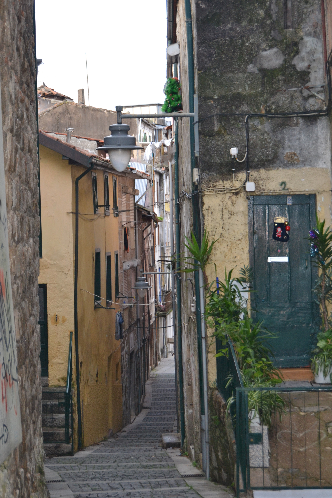

Rua da Vielinha - nascente.Rua da Vielinha - poente.Imagem atual da Rua

Imagem atual da Rua
Pequena e estreitíssima artéria que ligava a Rua de Maximinos com o
rexio da Praça.
Acompanhando a muralha que a faceia parcialmente, tem o prazo do Cabido mais antigo,
com data de 1515.
Com uma configuração esquisita, tinha em 1750 as casas do lado Poente,
que escontavam à muralha, de bastante boa qualidade, havendo em 4 delas varandas (de
madeira?) e gelosias. Com excepção de uma, todas eram sobradadas.
Quase insólita é a existência de uma capela, sobre as casas, talvez até sobre a
muralha, e sensivelmente a meio da rua, de que não conhecemos nenhuma referência
escrita.
Do lado Nascente, as casas são de diferentes pisos, com bastante mau desenho de
fachada; as janelas eram tapadas por portadas de madeira. Há uma, porém, com um desenho
estranhíssimo e com uma linha de empena extremamente irregular.
A meio deste lado havia um pequeno beco que levava a uma casa.
Penso ser a designação de Vielinha bastante mais correcta que a actual de Violinha,
que, aliás, deve ter origem no topónimo antigo.
Das 8 casas do lado Nascente e 7 do Poente, eram prazos do Cabido 6 do
Nascente.
Lista de Casas
Casa Número: 1
Enfiteuta: Os herdeiros de Filipa Francisca, mulher de Francisco de Freitas
Foro: 20 reis
Descrição: Foi pertença do n.º 15 da Rua dos Sapateiros.
Casa Número: 2
Enfiteuta: Desconhecido
Foro: Desconhecido
Descrição: Esta casa pertence à obra da Sé, a quem os herdeiros de Domingos de Araújo, caminheiro, e sua mulher,
Catarina Gonçalves, lhe pagam de foro
80 reis. Esteve integrada no prazo de uma casa da
Rua dos Sapateiros.
Casa Número: 3
Enfiteuta: Manuel da Silva, padeiro
Foro: 10 reis e 1 galinha
Descrição: Pertenceu ao n.º 15 da Rua dos Sapateiros.
Casa Número: 4
Enfiteuta: Vid. casa n.º 12, da Rua dos Sapateiros (rua n.º 23).
Foro: Desconhecido
Descrição: Encontra-se subemprazada aos herdeiros de Manuel
Coelho de Araújo, tratante, e sua mulher, Maria da Costa. Faz parte do prazo da casa n.º
12, da Rua dos Sapateiros, à qual paga de foro 2000
reis.
Casa Número: 5
Enfiteuta: Desconhecido
Foro: Desconhecido
Descrição: Corresponde ao n.º 13 da Rua dos Sapateiros.
Casa Número: 6
Enfiteuta: Desconhecido
Foro: Desconhecido
Descrição: Corresponde ao n.º 18 da Rua de Maximinos, para onde tem a
frontaria e serventia principais.